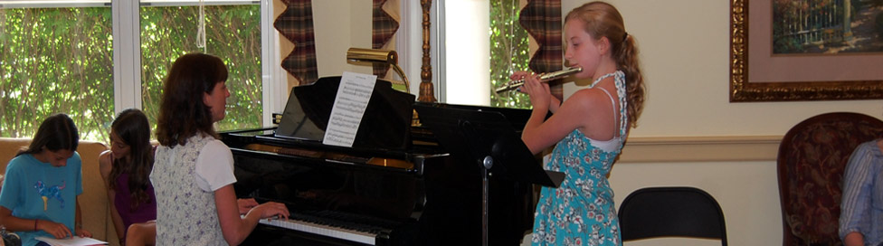

Comments from Parents and Students
Judit has really connected with our teenage son Drew by allowing him to learn pieces that interest him from many genres. She is a patient, encouraging teacher, and Drew really looks forward to his lesson. He feels Judit is a partner with him as he seeks to become more proficient as a pianist.
From - Anne and Ken Briner
Ayer, Ma.
Our twin 10 year old girls have been taking piano lessons with Judit for nearly two years. As a result of Judit’s enthusiasm and patience, the girls not only look forward to their weekly lessons, but will often practice without our having to instruct them to. They now have much more confidence in their musical abilities and enjoy performing in Judit’s bi–annual recitals as well as at an assisted living facility. We are very impressed with the progress that they have made in such a short time.
Judit provides a positive and enjoyable environment that allows our children to truly look forward to their weekly lessons. We strongly recommend her for anyone looking to learn piano at any level.
Scott and Betsy Keho.
Harvard, Ma.
When we chose a piano teacher for my Grandson seven years ago, I heartily recommended Judit Ernst because she is a well–rounded musician and a fine pianist who relates very well to young students. She offers encouragement and empathy as well as basic pianistic skills and techniques to her students. She makes sure that her students study varied repertoire from the Classics to Jazz and that they play musically and with enthusiasm. My grandson, Alex, now a freshman in High School, continues to enjoy his piano lessons with Judit. He plays often in both recitals and public events with ease and success.
Nancy Peters, Harpist and Pianist, Indian Hill Music School.
Shirley, Ma.
We tried out several piano instructors before we found the perfect fit with Judit for our daughter. With her easy going manner and sense of fun, Judit planted the seed for the love of making music. Her high expectations and professionalism have been the encouragement for Sophia to work hard for the past 8 years. Judit has been such an integral part of our daughter's education and sense of confidence throughout her schooling, we will be forever thankful!
Anne Grallert
Ayer, Ma.
Judit is a very talented pianist and instructor with the ability to identify her students interests and abilities so as to inspire them to follow the path that their creativity leads.
Judit is patient and concerned with the individual musical makeup of the individual student, guiding that student to grow and develop musically at their own pace.
As a former piano student that brought my daughter for lessons, Judit encouraged me to spend time at the piano to resume my playing. Since then, I have grown significantly musically and independently in my creativity, while having the opportunity to play and perform along with my daughter many times.
Lisa DiCarlo
Lunenburg, Ma.
Our children, age 11 and 13, have studied piano with Judit for four years. During this time their skill level and confidence has grown immensely enabling them to perform with ever-increasing ease. She is patient and kind and listens to their preferences for what repertoire they wish to play while maintaining a balance of what they should be learning. They are exposed to a wide variety of music, from classical, to jazz, to folk tunes. They have been encouraged to collaborate on duets together, and Judit has inspired a passion and love of music within them. They have grown very fond of her and we are very pleased that they have had the opportunity to study piano with her.
Carolyn and Mark Cantrell
Littleton, Ma.
Ms. Ernst has taught my daughter piano for the past 3 years. Right from the beginning, she had my daughter playing simple but lovely songs. Her approach is gentle and encouraging and I have enjoyed hearing my daughter's success playing increasingly difficult music. Ms. Ernst arranges recital experiences for her students that have varied over the years from informal recitals in her home to opportunities to play in local venues such as assisted living communities and the Fitchburg Art Museum, which further enhance her students' musical experiences. My daughter enjoys playing daily and her skills have grown tremendously - Thank you, Ms. Ernst!
Amy Hilbert
Littleton, Ma.
After 3 years with 2 different teachers we have been delighted to see our son settle into such a positive and productive piano lesson experience with Judit. Her kind and firm style has been just what he needs to move him to the next level. With Judit he's realized he likes to play and needs only a gentle nudge to practice. We all enjoy the selections she chooses for him and he looks forward to his weekly practice. Thanks Judit!
Helen and Jamie Watt
Acton, Ma.